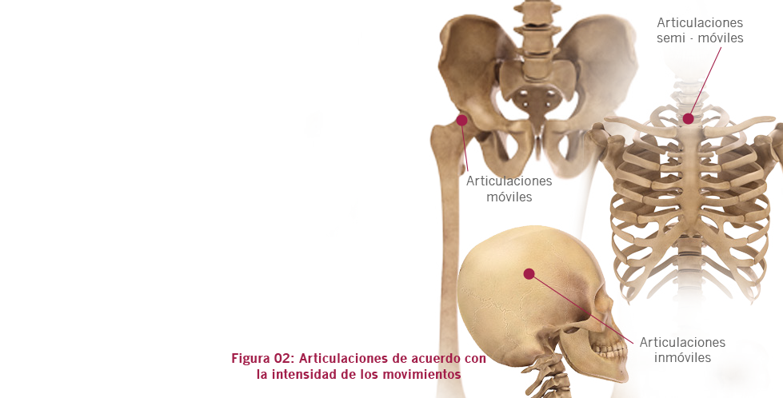
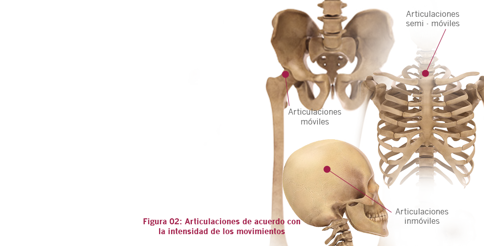

01. Anatomía y Fisiología
B. Sistema articular
Una articulación es la estructura formada por la unión de dos o más huesos, cuyos extremos están cubiertos por cartílagos en el punto de contacto. La función principal de estas estructuras es permitir que el cuerpo ejecute los movimientos.
Con relación a su estructura, las articulaciones pueden ser clasificadas como:
- Fibrosa: cuando los huesos están unidos por tejido conjuntivo fibroso;
- Cartilaginosa: cuando los huesos están unidos por cartílagos;
- Sinovial: cuando existe un espacio entre los huesos.
Considerando la amplitud de los movimientos, las articulaciones pueden ser clasificadas como se ilustra en la Figura 02 y detallado en la Tabla 01:
- Móvil (o sinovial);
- Semi-móvil;
- Inmóvil.
 
